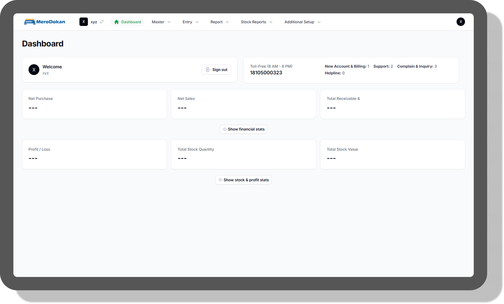
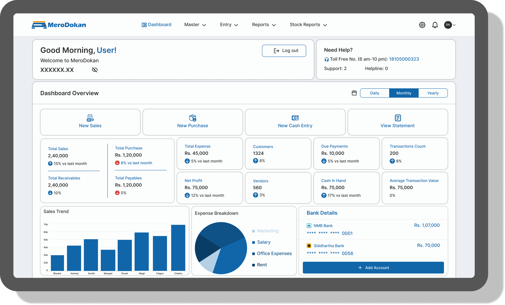
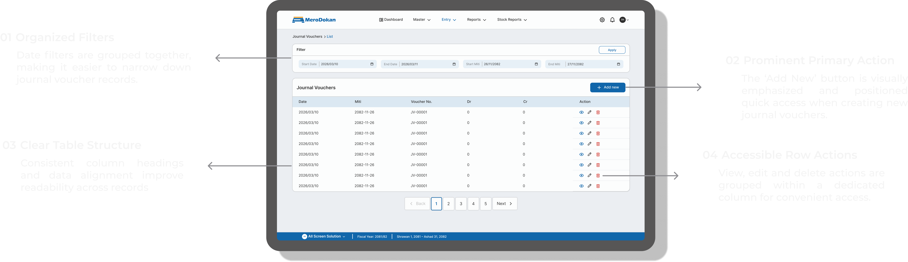
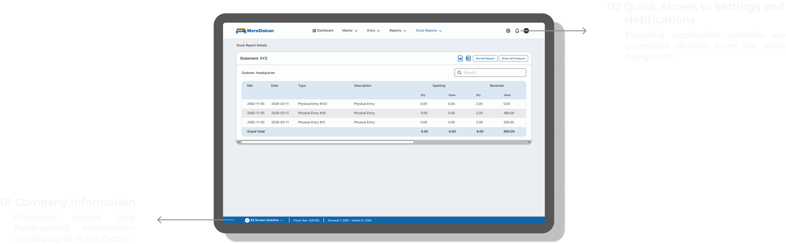
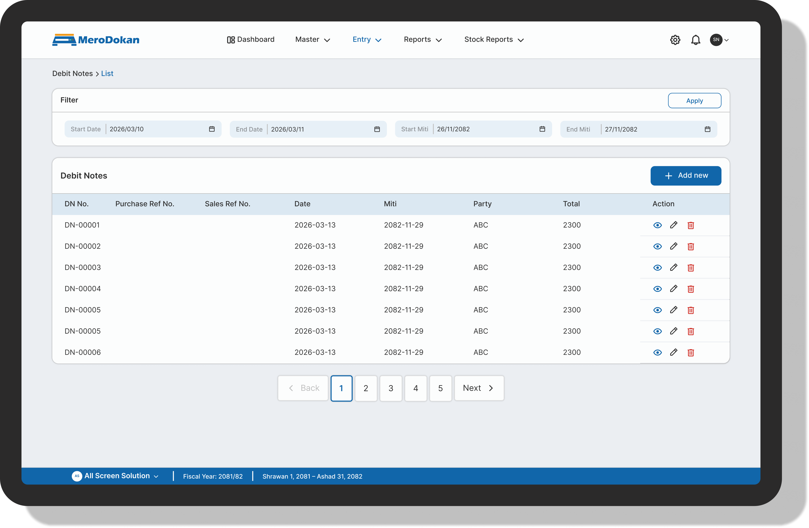
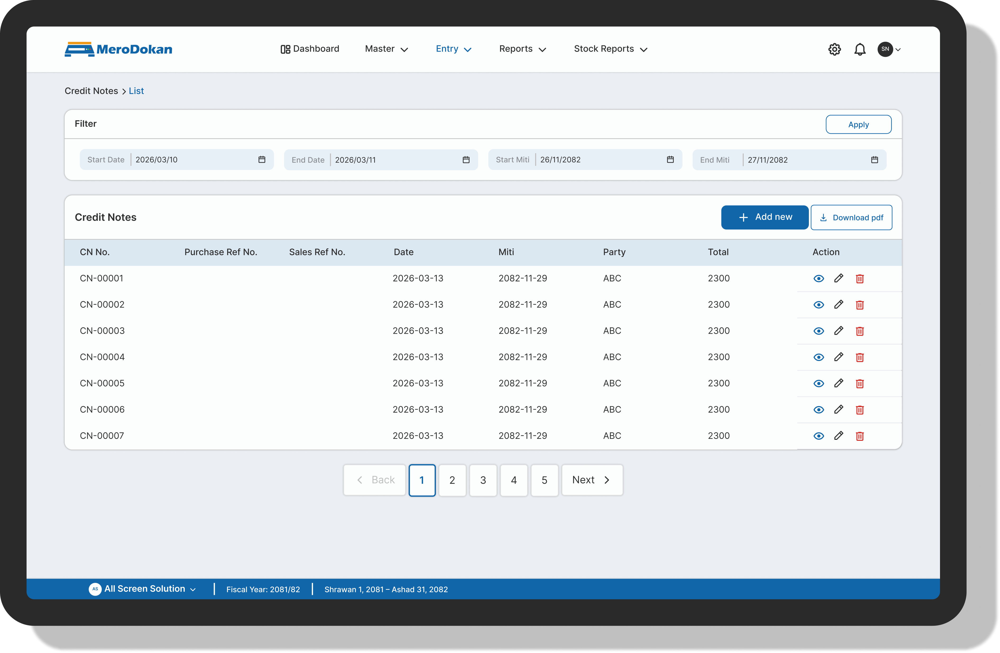
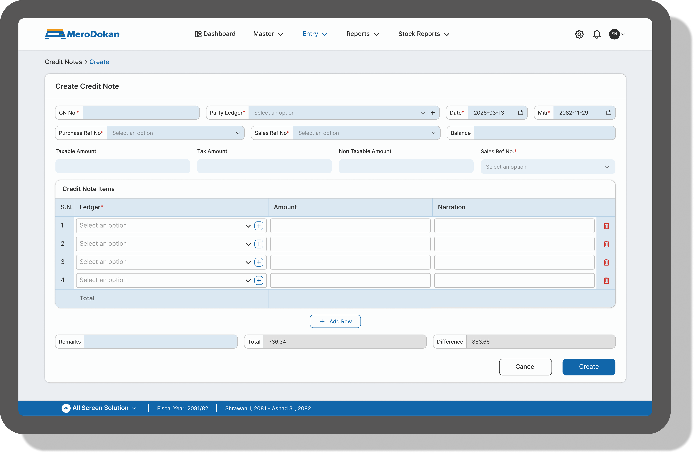
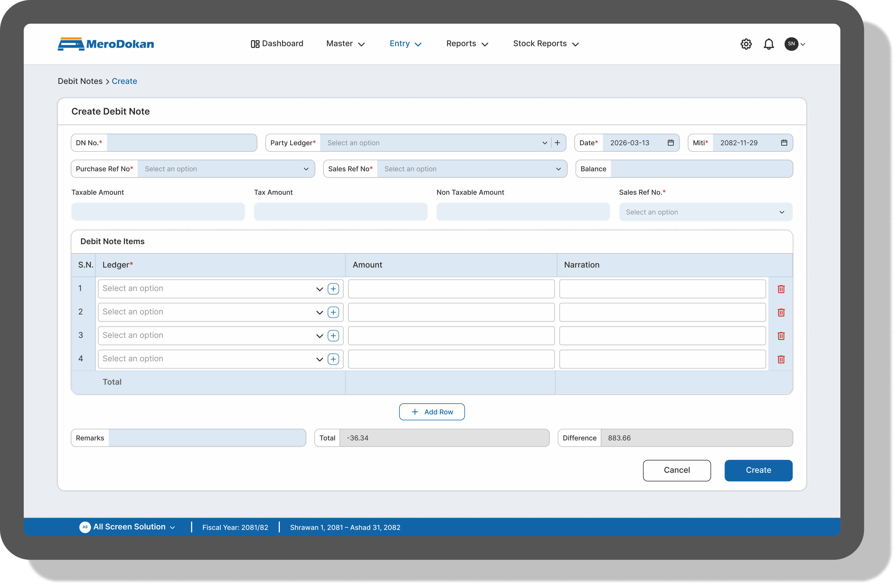

Complex Business Information
Shop management involves various records and transactions that need to remain organized and easy to understand
A visual redesign of MeroDokan’s desktop interface, focused on improving the presentation of shop management features through refined layouts, consistent UI components, and visual styling. I also introduced and designed additional navigation items while working within the existing product structure.

MeroDokan is a desktop-based shop management platform that brings inventory, sales, purchases, accounting, and other daily business operations into one system.
I worked on redesigning the existing desktop interface, refining its visual presentation across the platform while retaining its existing content, navigation, and information hierarchy.
The goal was to create a more consistent and readable interface through improved typography, spacing, colors, and reusable UI components, making everyday shop-management tasks easier to navigate.
The project focused on the visual redesign of MeroDokan's existing desktop application.
The redesign retained the existing product structure and functionality.
The existing interface presented several visual and usability considerations that needed attention.
Shop management involves various records and transactions that need to remain organized and easy to understand
Differences in component styling and layouts across modules can make the overall experience feel less cohesive
Tables, inventory records, and transaction details require clear visual hierarchy and readable layouts
The redesign focused on reviewing the existing interfaces, identifying visual inconsistencies, and establishing a consistent design direction across the application.
MeroDokan's existing navigation and module structure were retained during the redesign. The work focused on improving the visual presentation of the existing product rather than changing its information architecture.

A consistent visual foundation was applied to support a cohesive interface across MeroDokan's desktop screens.
The selected color palette was applied consistently across navigation, buttons, backgrounds, text, and interface elements to establish a unified visual language.

Inter was used throughout the interface to establish a clear typographic hierarchy and maintain readability across headings, labels, tables, and body text.

A consistent icon style and sizing approach was used to maintain visual alignment and familiarity across interface elements.
| Property | Example |
|---|---|
| Icon Source | Iconify |
| Standard Size | 16 × 16 px |
| Stroke Weight | 1.45 px |
| Alignment | Center-aligned |
| Style | Outline |
Reusable styling patterns were applied to buttons, input fields, tables, and other recurring UI elements to maintain consistency across modules.

The redesign focused on refining the existing interface while preserving its underlying product structure and functionality.


The dashboard brings quick actions, key business metrics, a sales trend chart, an expense breakdown and bank details onto one screen, with Daily, Monthly and Yearly views for comparing performance.

Ledgers are listed in a clean, searchable table with an Add new button. Pagination and horizontal scrolling keep long lists with many columns easy to manage.

Sales orders can be filtered by start and end date in both the Gregorian (AD) and Nepali (Miti) calendars. Results appear in a table with a summary row and an Add new button.

The statement report lets users filter by date range and ledger, with optional toggles for remarks, product details and reference number. The table shows debit, credit and balance, with refresh and PDF or Excel export.

The stock report shows opening and received quantities and values per transaction for the selected godown, ending in a grand total row. Users can search the table, export to PDF or Excel, and use the Normal Report and Show All Products options.

Additional Settings groups preferences into Feature Toggles, Stock Display, Barcode Settings and Thresholds, so users can switch features on or off and set stock and credit limits in one place.

Five design decisions guided the redesign of MeroDokan's desktop experience: dashboard hierarchy, information density, product navigation, and consistent interaction patterns.


Consistent table layouts, search fields, filters, and row actions help users navigate and manage records across different modules.


Standardized input fields, dropdowns, buttons, and form layouts provide a familiar experience when performing different tasks.


The redesign established a more consistent visual experience across MeroDokan's desktop application.
Applied a unified visual language across modules.
Refined typography, spacing, and information presentation.
Standardized recurring UI elements across screens.
Created a more visually organized desktop experience while preserving existing product functionality.
The project strengthened my experience in redesigning data-heavy desktop applications, applying a consistent visual system while working within an existing product structure.